Ratata


Broedplaats Ratata is een plek waar impactondernemers je op hun eigen wijze meenemen op hun missie. Verwondering en creativiteit staan centraal op deze inspirerende plek en elke hoek vertelt een ander verhaal. Ratata, een nieuw initiatief van Jorien Stoop, brengt jonge ondernemers samen als conceptuele plek voor culturele uitwisseling. Tijdens de netwerkavond voor vrouwelijke ondernemers legde Ani de voorbereidingen achter de schermen en de avond zelf vast.
Behind the scenes en eventverslag door Ani.

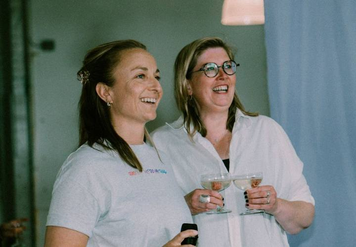

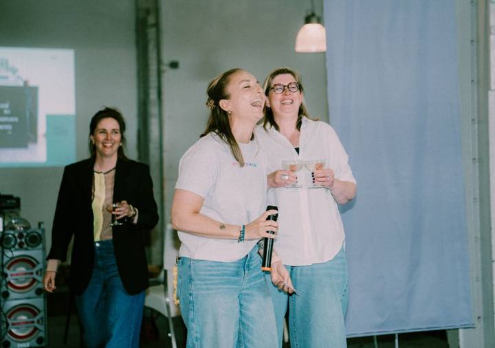

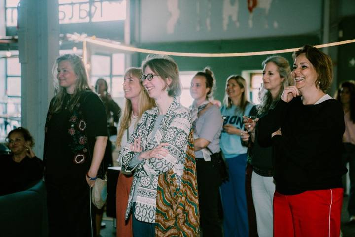

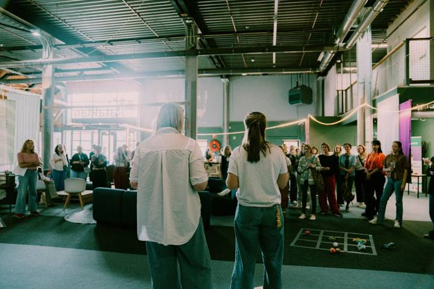

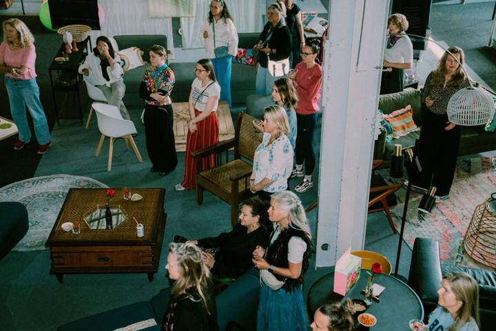

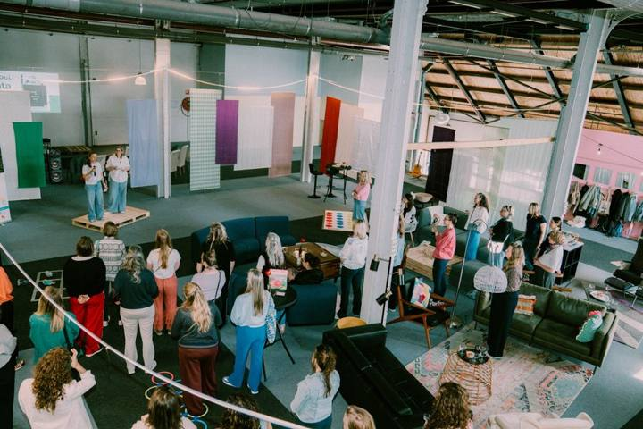

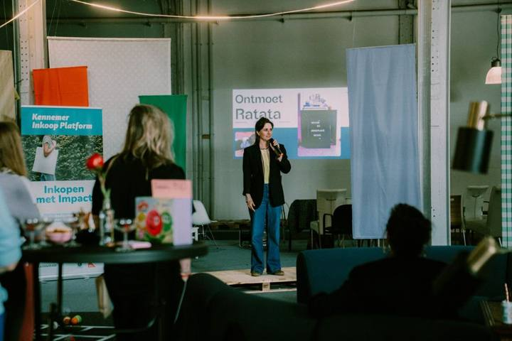

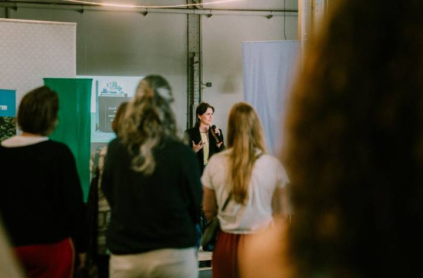

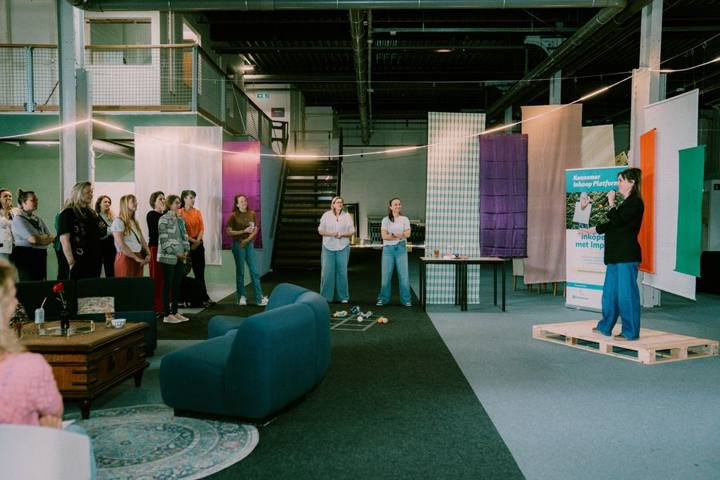

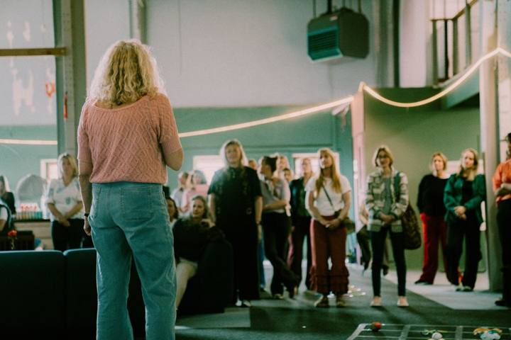

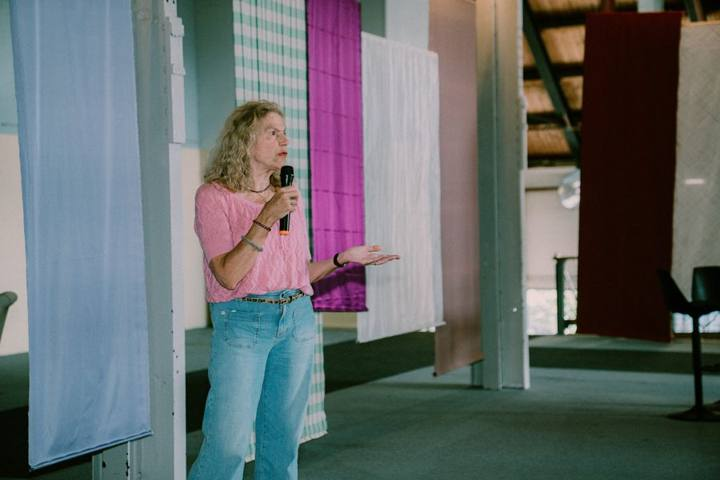

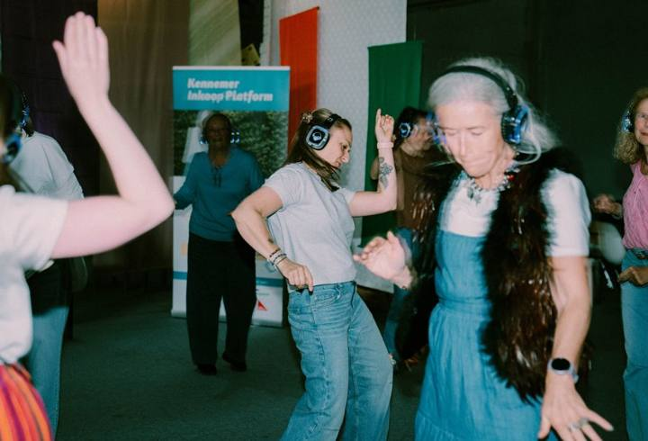

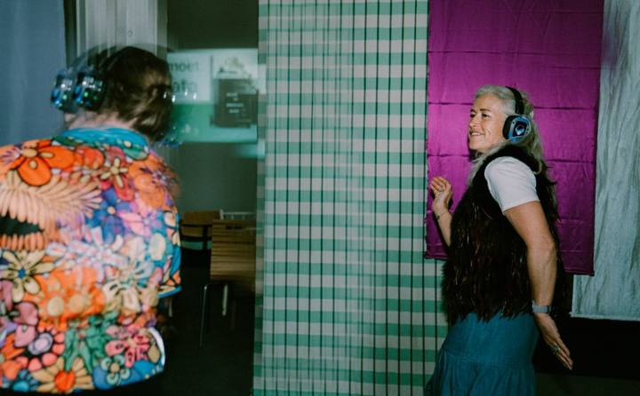

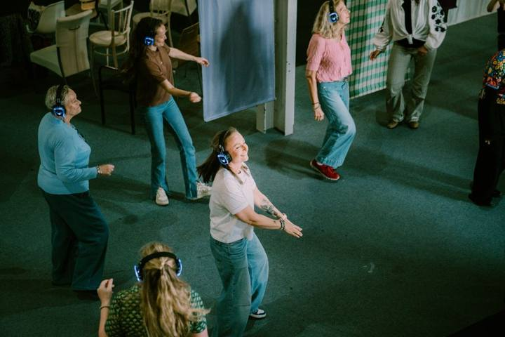

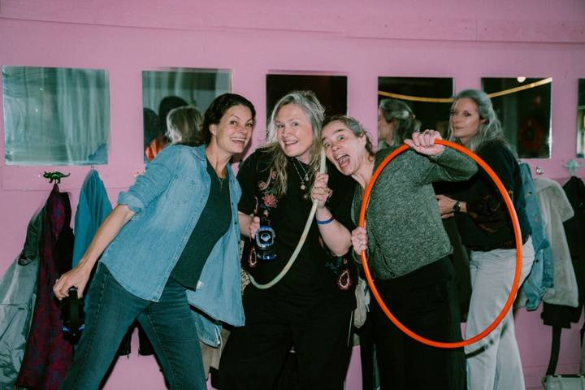

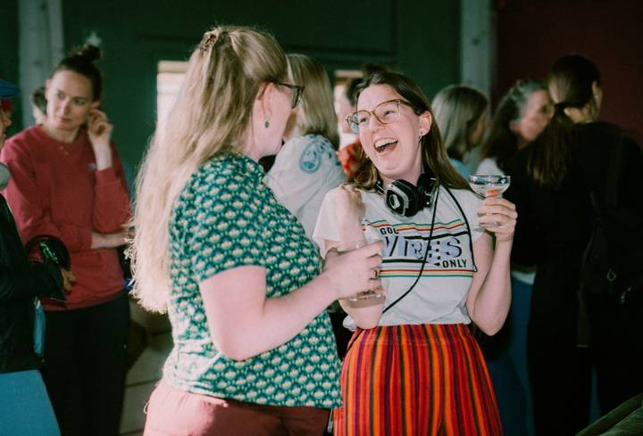

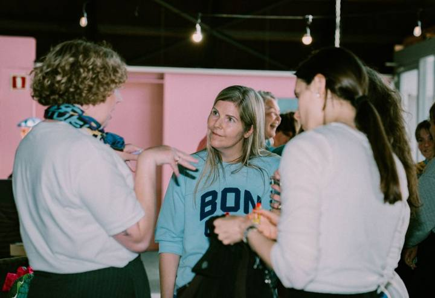

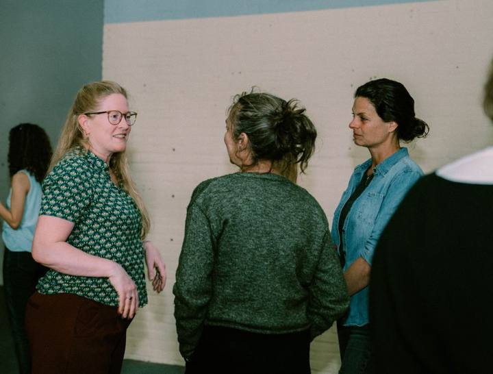

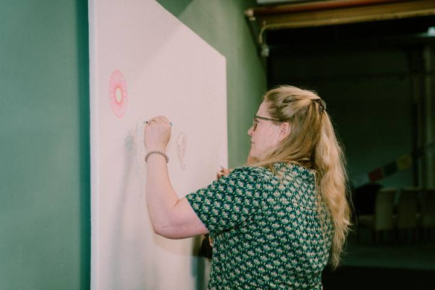

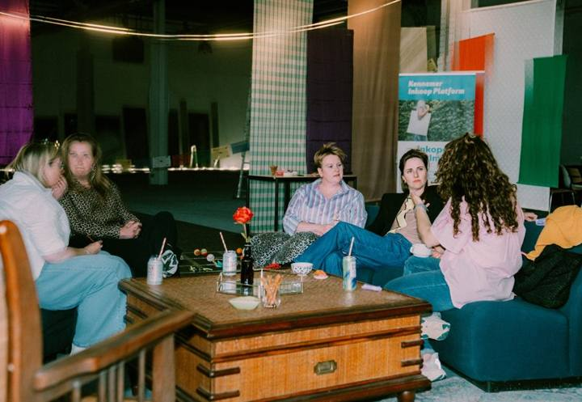

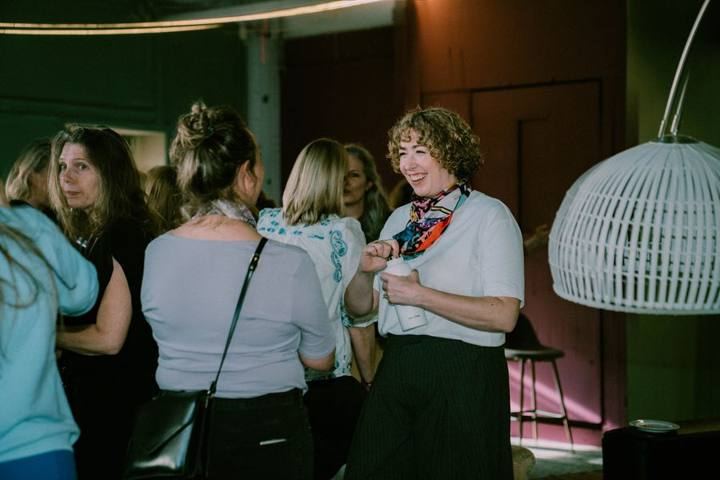

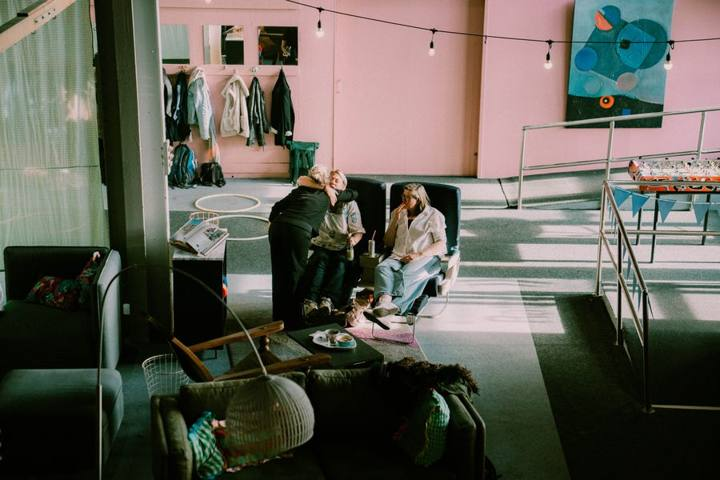

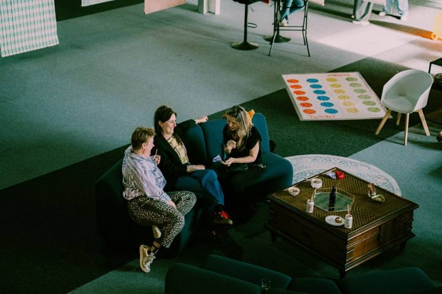

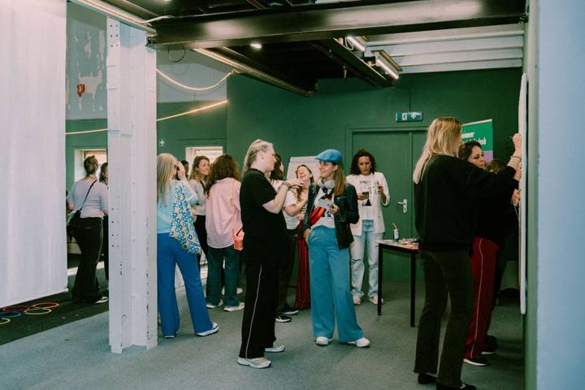